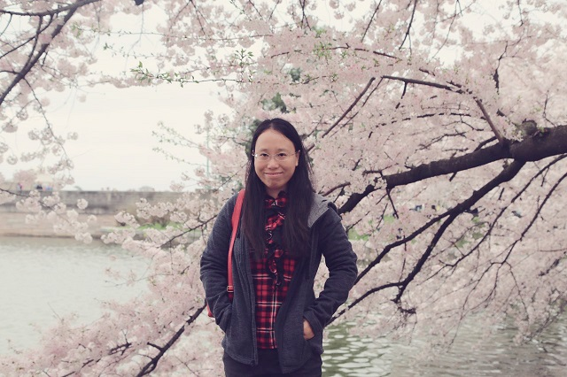

Meijun Sun(孙美君)，Professor（教授,博导）
天津大学智能与计算学部计算机学院
天津大学可视计算团队、天津市机器学习重点实验室、智慧城市教育部工程研究中心
孙美君：本科为天津大学电气工程及其自动化学院，现为天津大学智能与计算学部教授、博士生导师。主要研究方向为神经网络持续学习、智能无人系统自主学习、多智能体协同感知预测和决策。主持了4项国家自然科学基金项目，在国际知名SCI期刊和会议上发表论文80多篇，包括CVPR、AAAI、ACM MM、IEEE Transaction on Cybernetics、IJCAI和Neurocomputing等人工智能领域知名期刊和会议。孙老师的研究成果在智能制造、智能医疗、文物保护等领域获得落地的应用。近些年开发的深度感知边缘智能服务关键技术实现了对边缘复杂场景中的多模态大数据进行处理、融合与分析的目标，在医疗、交通、金融多个边缘场景中获得应用，并获得2021年天津市科技进步二等奖。负责设计与开发的中国水墨画的计算机仿真技术获得天津市技术发明二等奖。研究成果在数字艺术、文物保护等领域获得落地的应用，其主持的故宫博物院兰亭序书法互动系统在故宫博物院端门展出供每日数万游客体验。
我们实验室的宗旨是培养具有开阔眼界、创新思维、优秀编程能力、优秀论文写作、优秀表达能力和优秀道德品质的人
愿意当本科生各种竞赛的指导老师，会组织面向本科生的讲座和培训，欢迎加入。
招收2025、2026、2027年秋季入学的研究生，欢迎有意向的同学联系。
实验室招聘
- 招收2025、2026、2027级学术及工程博士（含在职工程博士）和硕士
- 博士申请标准：（1）思想端正，身心健康，积极向上；（2）硕士阶段以第一作者或者导师第一学生第二发表过CCF A类或者中科院一区、二区论文；（3）具有良好的代码实现能力和写作能力。
研究领域
- 主要理论研究：神经网络持续学习、智能无人系统自主学习、多智能体协同感知预测和决策
- 应用研究如下：
- AI for 管理：研究用人工智能的科研手段去解决管理学中的问题，比如预测、优化决策，帮助企业决策。
- AI for 能源：新能源预测算法、时间序列大模型；
- 多模态融合的目标感知：开放环境下弱目标感知，面向应急救援的无人机视觉三维重建和目标感知，伪装目标感知；
- 数字孪生世界模型：基于Unreal Enginee（虚幻引擎）的虚拟世界搭建、仿真训练、世界模型；
实验室科研模式
- 实验室主攻神经网络持续学习及相关的机器学习方向，由博士生+不同年级硕士生+本科生科研助理构成，导师定期和每组开组会推动科研进展，科研成果按照贡献署名。
- 研一阶段由导师亲自带并加入博士课题，研一阶段或研二初期末期需要完成投稿SCI论文一篇，以做出高水平的科研成果为目标。
- 需要负责或参与实验室的项目工作，与团队协同进行研发。
- 我不提倡的：低水平按钮式科研；不敢踏出自己舒适区。
项目经历
- 2024.1-2025.12，面向配网源网荷储协同优化的图强化学习技术研究及应用，国家电网总部科技项目, 共同负责人
- 2023.12-2026.10，多场耦合下岩土质文物仿真模拟技术智能提升与应用示范，甘肃省科技重大专项计划项目, 共同负责人
- 2024.1-2026.12，**综合勤务保障模拟与数字孪生训练原型系统研发，国家重点研发计划课题, 参加人
- 脑启发目标域偏移自适应学习技术研究，北京航天自动控制研究所, 2023.6-2024.6，负责人
- 2024.1-2027.12，多维度不确定性驱动的弱目标分割方法研究，国家自然科学基金面上, 负责人
- 2022.5.1-2023.12.31，基于机器学习的焊接缺陷自动判读技术研究，中国船舶工业综合技术经济研究院，军工横向，负责人
- 2021.12.16-2023.10.30，基于CPSS的客户侧边缘感知与能源控制技术研究，中国电力科学研究院有限公司，横向，负责人
- 2021.1-2024.12，基于显著性的主动学习方法研究及其在医疗影像分析中的应用，国家自然科学基金面上, 负责人
- 2019/01-2022/12，面向癌症检测的小样本高光谱图像分类理论研究，国家自然科学基金面上项目，负责人
- 2019/01-2022/12，2015.4-2017.9，肿瘤患者的影像大数据诊疗和分析平台，天津市科技支撑计划，结题，负责人
- 2015.1-2019.1，基于高光谱图像分析的古代壁画病害监测及艺术风格化恢复方法研究，国家自然科学基金面上项目，负责人
实验室特色
- 方向好：实验室设置的方向均为国家重大需求，有很多的落地项目和合作。
- 团队好：实验室有浓厚的学术氛围，无论你是菜鸟还是大神都可以在学术世界里自由翱翔。
- 模式好：实验室有成熟的梯队建设和管理办法，老带新，导师全局管理，对新人友好，鼓励学术大胆创新。
- 按劳分配：实验室只讲贡献，按劳分配，能干的学生老师绝对不卡，鼓励按时甚至提前毕业，躺平躲活的学生请不要来我们实验室。
主讲课程
- 《操作系统》
- 《多媒体应用技术》
联系方式
天津大学北洋园校区55楼A214
，详细事项可以加王征教授微信联系18622012862
sunmeijun@tju.edu.cn